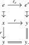
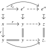
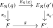
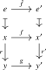
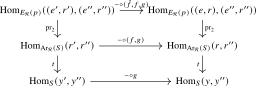
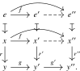
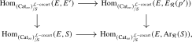
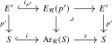

The envelope of an operad will be a special case of a construction which freely adjoins cocartesian lifts. Throughout the section, we fix an \(\infty \)-category \(S\) and a wide subcategory \(\Rr \subset S\). We will show that for any functor \(p\colon E\to S\), there exists a functor \(E_{\Rr }(p)\to S\) equipped with a map from \(E\) over \(S\) which universally adds cocartesian lifts over the morphisms in \(\Rr \). In case \(\Rr \) is part of a factorization system \((\Ll ,\Rr )\) on \(S\) and \(p\) already admits cocartesian lifts over the morphisms of \(\Ll \), we will show that \(E_{\Rr }(p)\) is in fact a cocartesian fibration over \(S\). Finally, we show that after slicing over the target projection \(t\colon \Ar _{\Rr }(S)\to S\), the free functor becomes fully faithful.
Our exposition in this section closely follows that from Barkan–Haugseng–Steinebrunner [Barkan et al. (2022), Section 2]. The free cocartesian completion has previously appeared in work of Gepner–Haugseng–Nikolaus [Gepner et al. (2017), Section 4], and the variant for factorization systems has appeared in work of Ayala–Mazel-Gee–Rozenblyum [Ayala et al. (2017), Proposition A.0.1] and Shah [Shah (2021), Theorem 3.6].
Definition 17.2.1 (\(\Rr \)-cocartesian fibrations). Let \(S\) be an \(\infty \)-category and \(\Rr \subset S\) a wide subcategory. A functor \(p\colon E\to S\) is called \(\Rr \)-cocartesian if for every \(e\in E\) and every \(r\colon p(e)\to y'\) in \(\Rr \) there exists a \(p\)-cocartesian morphism \(\hat r_e\colon e\to e'\) lifting \(r\). A functor \(f\colon E\to E'\) over \(S\) between \(\Rr \)-cocartesian fibrations is \(\Rr \)-cocartesian if it preserves \(p\)-cocartesian morphisms over morphisms in \(\Rr \). We denote by \[ (\Cat _\infty )^{\Rr \mathrm {-cocart}}_{/S}\quad \subset \quad (\Cat _\infty )_{/S} \] the (non-full) subcategory spanned by the \(\Rr \)-cocartesian fibrations and \(\Rr \)-cocartesian functors.
Construction 17.2.2 (Freely adjoining \(\Rr \)-cocartesian morphisms). Using the notation \(\Ar _{\Rr }(S)\) from Lemma 17.1.9, for any \(p\colon E\to S\) we define \[ E_{\Rr }(p) \quad :=\quad E\times _{S,s}\Ar _{\Rr }(S)\xrightarrow {\;t\circ \pr _2\;}S. \] This construction defines an endofunctor \(E_{\Rr }\colon (\Cat _\infty )_{/S}\to (\Cat _\infty )_{/S}\).
Lemma 17.2.3. For every functor \(p\colon E \to S\), the functor \(E_{\Rr }(p)\) is an \(\Rr \)-cocartesian fibration, and for every functor \(f\colon E \to E'\) over \(S\) with structure map \(p'\colon E' \to S\), the induced functor \(E_{\Rr }(f)\colon E_{\Rr }(p) \to E_{\Rr }(p')\) over \(S\) is an \(\Rr \)-cocartesian functor.
Proof. First note that the target functor \(t\colon \Ar _{\Rr }(S) \to S\) is an \(\Rr \)-cocartesian fibration: given an object \((r\colon x \to y) \in \Ar _{\Rr }(S)\) (i.e., a morphism in \(\Rr \)) and a morphism \(r'\colon y \to y'\) in \(\Rr \), a \(t\)-cocartesian lift of \(r'\) starting in \(r\) is given by the commutative square
In particular, we see that a morphism in \(\Ar _{\Rr }(S)\) over \(r' \in \Rr \) is \(t\)-cocartesian if and only if its image under the source functor \(s\colon \Ar _{\Rr }(S) \to S\) is an isomorphism in \(S\).
The general case is similar: given an object \((e,r\colon x \to y)\) in \(E_{\Rr }(p)\) and a morphism \(r'\colon y \to y'\) in \(\Rr \), an \(\Rr \)-cocartesian lift is given by the map \((e,r\colon x \to y) \to (e, r'r\colon x \to y')\) in \(E_{\Rr }(p)\). Indeed, the hom anima in the pullback \(E_{\Rr }(p)\) is the corresponding pullback of the hom animae in \(E\) and \(\Ar _{\Rr }(S)\), and this morphism is the identity on the \(E\)-component. Its cocartesian property therefore follows from that of the displayed morphism in \(\Ar _{\Rr }(S)\).
Note that these morphisms leave the \(E\)-component fixed. In particular, it is clear that the functor \(E_{\Rr }(f)\colon E_{\Rr }(p) \to E_{\Rr }(p')\) over \(S\) is an \(\Rr \)-cocartesian functor for every \(f\colon E \to E'\) over \(S\). □
Since \(\Rr \) contains every identity map, restriction along \([1] \to *\) induces a fully faithful functor \(i\colon S \to \Ar _{\Rr }(S)\), given by \(x \mapsto \id _x\). The target and source functors are respectively a left and a right adjoint to \(i\): \[ t \dashv i \dashv s. \] The unit \(\id \to i \circ t\) of the first adjunction and the counit \(i \circ s \to \id \) of the second are given at a morphism \(r\colon x \to y\) by the squares
respectively. Pulling back \(i\) also provides a fully faithful functor \[ i_p\colon E \simeq E \times _{S} S \xrightarrow {E \times _S i} E \times _S \Ar _{\Rr }(S) = E_{\Rr }(p) \] over \(S\), for every \(p\colon E \to S\). Note that this is natural in \(p\), in the sense of defining a natural transformation \(\id \to E_{\Rr }\) of endofunctors of \((\Cat _\infty )_{/S}\).
Lemma 17.2.4. If \(p\colon E \to S\) is an \(\Rr \)-cocartesian fibration, the functor \(i_p\colon E \to E_{\Rr }(p)\) admits a left adjoint \(\pi _p\colon E_{\Rr }(p) \to E\), given on objects by sending a pair \((e,r\colon x \to y)\) to the target \(e'\) of the \(p\)-cocartesian lift \(\hat {r}_e\colon e \to e'\) of \(r\).
Proof. By the pointwise criterion for left adjoints, it suffices to show that for a fixed object \((e,r)\) of \(E_{\Rr }(p)\), the object \(e' \in E\) is a left adjoint object to \((e,r)\) under the functor \(i_p\). Note that there is a canonical map \((e,r) \to (e',\id _y) = i_p(e')\) given by the following diagram:

We need to show that for every other object \(e'' \in E\) with \(z := p(e'') \in S\), restriction along this map induces an equivalence \[ \Hom _{E}(e',e'') \to \Hom _{E_{\Rr }(p)}((e',\id _y), (e'',\id _z)) \to \Hom _{E_{\Rr }(p)}((e,r\colon x \to y), (e'',\id _z)). \] Equivalently, we may show that the fiber over every morphism \((e,r\colon x \to y) \to (e'',\id _z)\) in \(E_{\Rr }(p)\) is contractible. By unwinding definitions, this is a consequence of the fact that there is a unique map \(e' \to e''\) whose composite with the \(p\)-cocartesian morphism \(\hat {r}_e\colon e \to e'\) is the given map \(e \to e''\), with the resulting commutative triangle living over the triangle \(x \to y \to z\) in \(S\). □
Remark 17.2.5. The last argument in the previous proof may be pictured as finding unique dashed arrows in the following solid commutative diagram:

It is clear that two dashed maps \(y \to z\) have to be the given map \(y \to z\) at the bottom. The uniqueness of the remaining map \(e' \to e''\) is then a consequence of \(\hat {r}_e\) being \(p\)-cocartesian.
Lemma 17.2.6. If \(q\colon F \to S\) is an \(\Rr \)-cocartesian fibration, the functor \(\pi _q\colon E_{\Rr }(q) \to F\) preserves \(\Rr \)-cocartesian morphisms. Moreover, given a morphism \(g\colon F \to F'\) in \((\Cat _\infty )^{\Rr \mathrm {-cocart}}_{/S}\), the Beck–Chevalley transformation \[ \pi _{q'} E_{\Rr }(g) \xrightarrow {\eta } \pi _{q'} E_{\Rr }(g) i_q \pi _q \simeq \pi _{q'} i_{q'} g \pi _q \xrightarrow {\epsilon } g \pi _q \] is a natural isomorphism. In particular, the following diagram commutes:

Proof. First consider an \(\Rr \)-cocartesian morphism \[ (e,r\colon x \to y) \longrightarrow (e,r'r\colon x \to y') \] in \(E_{\Rr }(q)\). The functor \(\pi _q\) sends it to the induced morphism \(r_!e \to (r'r)_!e\). Both the composite \(e \to r_!e \to (r'r)_!e\) and its first factor are \(q\)-cocartesian, so the second factor is \(q\)-cocartesian by Lemma 23.1.14. Thus \(\pi _q\) preserves \(\Rr \)-cocartesian morphisms.
It suffices to show that the transformation is a pointwise isomorphism for every individual object \((e,r\colon x \to y)\) in \(E_{\Rr }(q)\). Let \(\hat {r}_e\colon e \to e'\) be a \(q\)-cocartesian lift of \(r\) in \(F\), and let \(\hat {r}_{g(e)}\colon g(e) \to e''\) be a \(q\)-cocartesian lift of \(r\) in \(F'\). The universal property of \(\hat {r}_{g(e)}\) then induces a map \(e'' \to g(e')\). But since \(g\) preserves \(\Rr \)-cocartesian morphisms, the map \(g(e) \to g(e')\) is already an \(\Rr \)-cocartesian morphism, hence the map \(e'' \to g(e')\) is an isomorphism in \(F'\). Unwinding the definitions of the counit of the adjunction \(\pi _{q'} \dashv i_{q'}\) reveals that this map is precisely the map \((\pi _{q'} E_{\Rr }(g))(e,r) \to (g \pi _q)(e,r)\), finishing the proof. □
We are now ready to prove the universal property of the \(\Rr \)-cocartesian fibration \(E_{\Rr }(p)\):
Given functors \(p\colon E \to S\) and \(q\colon F \to S\), we write \(\Fun _{/S}(E,F)\) for the fiber of \(\Fun (E,F) \to \Fun (E,S)\) over \(p\). If both functors are \(\Rr \)-cocartesian, we write \(\Fun _{/S}^{\Rr \mathrm {-cocart}}(E,F)\) for the full subcategory spanned by the functors which preserve cocartesian morphisms over \(\Rr \).
Proposition 17.2.7 (Free adjunction of \(\Rr \)-cocartesian lifts). The functor \[ E_{\Rr }\colon (\Cat _\infty )_{/S}\to (\Cat _\infty )^{\Rr \mathrm {-cocart}}_{/S} \] from Lemma 17.2.3 is left adjoint to the forgetful functor, with unit given by \(i_{p}\colon E \to E_{\Rr }(p)\) and counit given by \(\pi _{q}\colon E_{\Rr }(q) \to F\). More precisely, given a functor \(p\colon E \to S\) and an \(\Rr \)-cocartesian fibration \(q\colon F \to S\), precomposition with \(i_{p}\) induces an equivalence \[ \Fun _{/S}^{\Rr \mathrm {-cocart}}\bigl (E_{\Rr }(p),F\bigr ) \iso \Fun _{/S}(E,F), \] with inverse sending \(f\colon E\to F\) to \(\pi _{q}\circ E_{\Rr }(f)\).
Proof. Consider first a morphism \(f\colon E \to F\) in \((\Cat _\infty )_{/S}\). We must show that the composite \[ E \xrightarrow {i_p} E_{\Rr }(p) \xrightarrow {E_{\Rr }(f)} E_{\Rr }(q) \xrightarrow {\pi _q} F \] is naturally isomorphic to \(f\). To this end, observe that by naturality of the map \(i_p\colon E \to E_{\Rr }(p)\) in \(p\), the composite of the first two maps is given by \(E \xrightarrow {f} F \xrightarrow {i_q} E_{\Rr }(q)\), naturally in \(f\). The desired equivalence is then induced by the counit map \(\pi _q \circ i_q \iso \id _F\) of the adjunction \(\pi _q \dashv i_q\), which is an equivalence by full faithfulness of \(i_q\).
Next, consider a morphism \(g\colon E_{\Rr }(p) \to F\) in \((\Cat _\infty )^{\Rr \mathrm {-cocart}}_{/S}\). We must show that the composite \[ E_{\Rr }(p) \xrightarrow {E_{\Rr }(i_p)} E_{\Rr }(E_{\Rr }(p)) \xrightarrow {E_{\Rr }(g)} E_{\Rr }(q) \xrightarrow {\pi _q} F \] is naturally isomorphic to \(g\). By Lemma 17.2.6, the composite of the last two maps is naturally equivalent to the composite \(E_{\Rr }(E_{\Rr }(p)) \xrightarrow {\pi _{E_{\Rr }(p)}} E_{\Rr }(p) \xrightarrow {g} F\); note that the natural isomorphism given there is natural in \(g\). The map \(\pi _{E_{\Rr }(p)}\) is given by composition in \(\Rr \): it sends a tuple \(((e,r\colon x \to y), r'\colon y \to z)\) to \((e, r'r\colon x \to z)\). In particular, if \(r = \id _y\) is the identity, this results in \((e, r'\colon y \to z)\). It follows that the composite \(\pi _{E_{\Rr }(p)} \circ E_{\Rr }(i_p)\) is naturally equivalent to \(\id _{E_{\Rr }(p)}\). This finishes the proof of the second statement of the proposition.
The first statement immediately follows from the second one by passing to groupoid cores on both sides, so that the left-hand side becomes \(\Hom _{(\Cat _\infty )^{\Rr \mathrm {-cocart}}_{/S}}(E_{\Rr }(p),F)\), while the right-hand side becomes \(\Hom _{(\Cat _\infty )_{/S}}(E,F)\). □
In case the wide subcategory \(\Rr \) is part of a factorization system \((\Ll ,\Rr )\) on \(S\), the functor \(E_{\Rr }\) turns \(\Ll \)-cocartesian fibrations into cocartesian fibrations:
Proposition 17.2.8. Let \((\Ll ,\Rr )\) be a factorization system on \(S\). If \(p\colon E\to S\) is \(\Ll \)-cocartesian, then \(E_{\Rr }(p)\to S\) is a cocartesian fibration, with cocartesian morphisms given by those diagrams

such that \(f\) lies in \(\Ll \) and \(\hat {f}\) is a \(p\)-cocartesian morphism in \(E\). Similarly, if \(g\colon E \to E'\) is an \(\Ll \)-cocartesian functor over \(S\), the induced map \(E_{\Rr }(g)\) is a cocartesian functor over \(S\).
Proof. We start by showing that \(E_{\Rr }(p)\) is a cocartesian fibration: given an object \((e, r\colon x \to y)\) in \(E_{\Rr }(p)\) and a morphism \(g\colon y \to y'\) in \(S\), we will construct a cocartesian lift over \(g\). To this end, consider the unique factorization of \(gr\colon x \to y'\) as \(r'f\), where \(f\colon x \to x'\) is in \(\Ll \) and \(r'\colon x' \to y'\) is in \(\Rr \). Also consider a \(p\)-cocartesian lift \(\hat {f}_e\colon e \to e'\) of \(f\) starting in \(e\); this exists by assumption on \(E\). We claim that the resulting morphism \((\hat {f},f,g)\colon (e,r) \to (e',r')\) in \(E_{\Rr }(p)\) is a cocartesian morphism with respect to the map \(t\pr _2\colon E_{\Rr }(p) \to S\). In other words, we must show that for every third object \((e'', r''\colon x''\to y'')\), the outer square in the commutative diagram

is a pullback square. But this follows from the pasting law of pullback squares: the top square is a pullback square since \(\hat {f}_e\) is \(p\)-cocartesian, and the bottom square is a pullback square since the morphism \((f,g)\colon r \to r'\) is \(t\)-cocartesian by Lemma 17.1.9.
This shows that \(E_{\Rr }(p)\) is a cocartesian fibration. By uniqueness of cocartesian lifts, it also confirms the description of the cocartesian morphisms. The fact that \(E_{\Rr }(g)\) preserves cocartesian morphisms over \(S\) is clear from this description. □
Remark 17.2.9. Diagrammatically, the fact that the morphism displayed in the previous proposition is cocartesian boils down to finding unique dashed morphisms in the following commutative diagram:

The uniqueness of \(x' \to x''\) making the bottom diagram commute is a consequence of the factorization system, while the uniqueness of \(e' \to e''\) making the top square commute holds by cocartesianness of \(\hat {f}\).
Corollary 17.2.10. The functor \(E_{\Rr }\) restricts to a functor \[ E_{\Rr }\colon (\Cat _\infty )^{\Ll \mathrm {-cocart}}_{/S}\longrightarrow \Cocart (S) \] which is left adjoint to the inclusion.
Proof. By Proposition 17.2.8, \(E_{\Rr }\) sends \(\Ll \)-cocartesian fibrations to cocartesian fibrations, showing that it restricts at the level of objects. The characterization of the cocartesian morphisms from Proposition 17.2.8 further shows that if \(f\colon E \to E'\) preserves \(\Ll \)-cocartesian morphisms, then \(E_{\Rr }(f)\) preserves cocartesian morphisms, showing that \(E_{\Rr }\) also restricts at the level of morphisms.
To show the resulting functor is left adjoint to the inclusion, we must show that the unit and counit of the adjunction from Proposition 17.2.7 lie in the appropriate subcategories. Given an \(\Ll \)-cocartesian fibration \(p\colon E \to S\), it is clear from the description of the cocartesian morphisms given in Proposition 17.2.8 that the unit \(i_{p}\colon E \to E_{\Rr }(p)\) preserves \(\Ll \)-cocartesian morphisms. Similarly, given a cocartesian fibration \(q\colon F \to S\), the counit \(\pi _q\colon E_{\Rr }(q) \to F\) preserves cocartesian morphisms: it sends a cocartesian morphism as displayed in Proposition 17.2.8 to the map \(r_!e \to r'_!e'\), which is \(q\)-cocartesian by the right cancellation property of \(q\)-cocartesian morphisms (see Lemma 23.1.14). □
To end the section, we will show that the functor \(E_{\Rr }\) from the corollary becomes fully faithful when slicing it over the cocartesian fibration \(t\colon \Ar _{\Rr }(S) \to S\). Note that the identity functor \(\id _S\colon S \to S\) is an \(\Ll \)-cocartesian fibration, and is in fact the terminal object of \((\Cat _\infty )^{\Ll \mathrm {-cocart}}_{/S}\). Also note that the cocartesian fibration \(t\colon \Ar _{\Rr }(S) \to S\) is the image of \(\id _S\) under \(E_{\Rr }\). As a result, \(E_{\Rr }\) induces a functor on slice categories \begin {equation} \label {eq:Envelope_Fully_Faithful} E_{\Rr }\colon (\Cat _\infty )^{\Ll \mathrm {-cocart}}_{/\id _S} \simeq ((\Cat _\infty )^{\Ll \mathrm {-cocart}}_{/S})_{/S} \to \Cocart (S)_{/\Ar _{\Rr }(S)}. \end {equation}
Proof. Consider two \(\Ll \)-cocartesian fibrations \(p\colon E \to S\) and \(p'\colon E' \to S\). We must show that the induced diagram
is a pullback square, where the horizontal maps are given by applying \(E_{\Rr }\). By the universal property of \(E_{\Rr }(p)\), we may identify this square with the square

where now the horizontal maps are given by postcomposition with \(i_{p'}\colon E' \to E_{\Rr }(p')\) and \(i\colon S \to \Ar _{\Rr }(S)\). But this is a simple consequence of the fact that the left square in the diagram

is a pullback square by the pasting law, and that a functor into \(E'\) preserves \(\Ll \)-cocartesian morphisms if and only if its composite with \(i_{p'}\) does. □
Generated from the authoritative LaTeX source.